iOS Simulator (iPhone 17, 402 x 874 pt) and headless Chromium at 402 px, against an isolated local Convex backend with the seeded sweep accounts only. All screenshots are from commit 4b040fc7 (2.13.50). The recorded clips from earlier builds are in old/shots and will be replaced after the owner's hands-on test.
Lobby and SOW coins
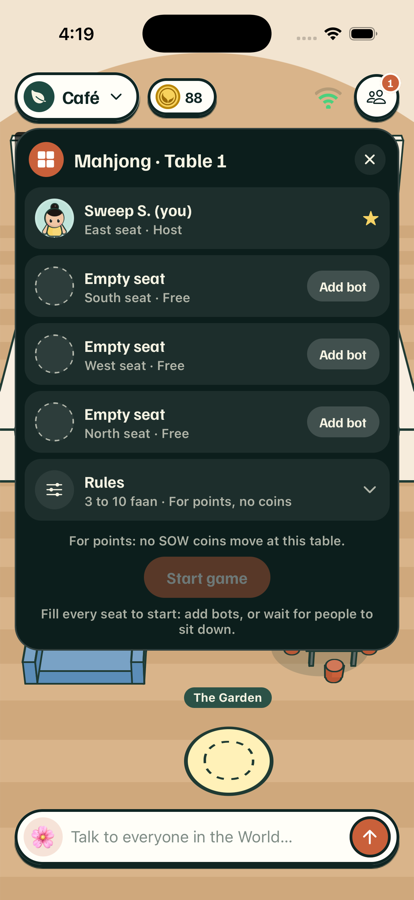
Lobby, coins off (the default): for points onlyCoins on: everyone needs the most one hand can cost (128 at a 10 faan cap)
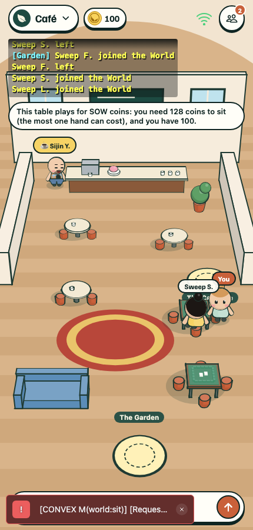
Web: a second player with 100 coins is refused the seat, and told why
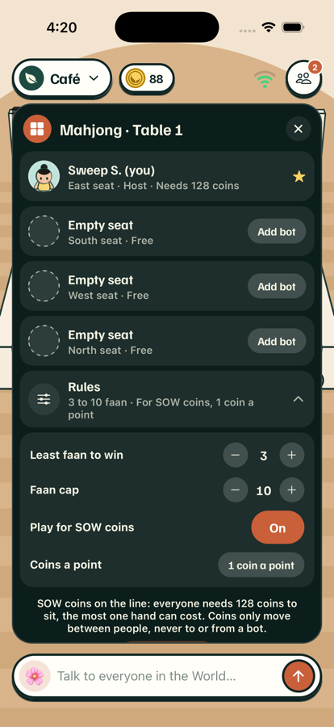
The lobby marks who is short and won't start
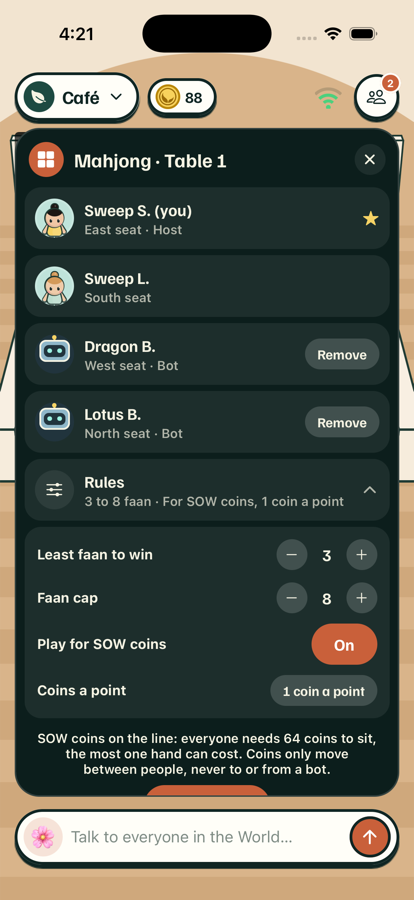
Cap lowered to 8 (64 coins), the second player sits, two bots added
The table
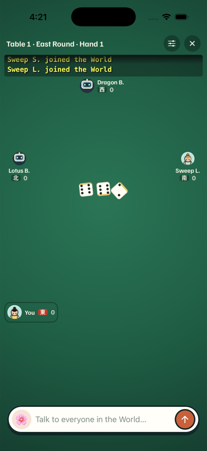
Dice and deal
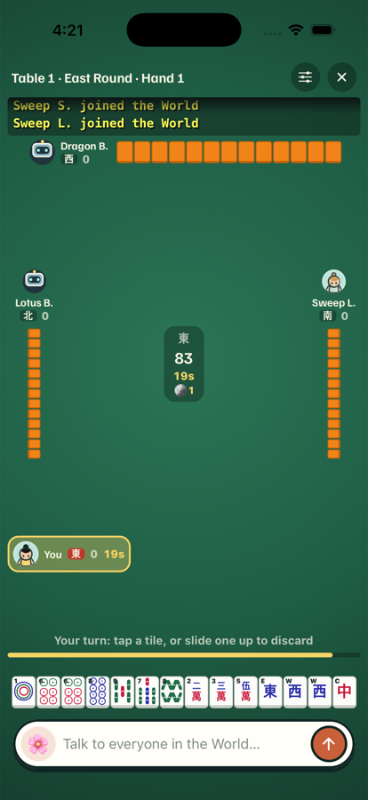
Early in a hand: each player on their side with a back for every tile they hold, a small counter in the middle
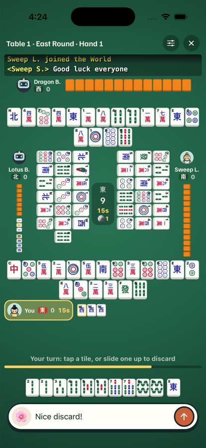
Late in a hand (5 tiles left): discards in fixed zones toward the middle, melds along each side
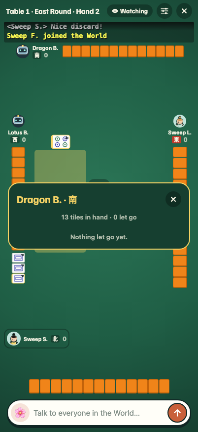
Web, watching: tap anyone's discards for a big view of them, their melds and tile count
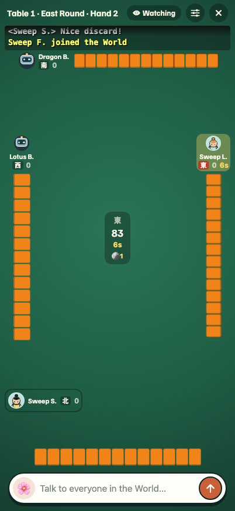
Web, watching: every hand face down
Options
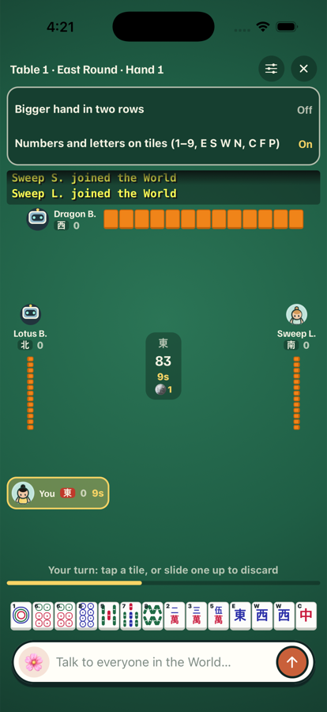
Options: two-row hand (off by default), numbers and letters on tiles (on by default)
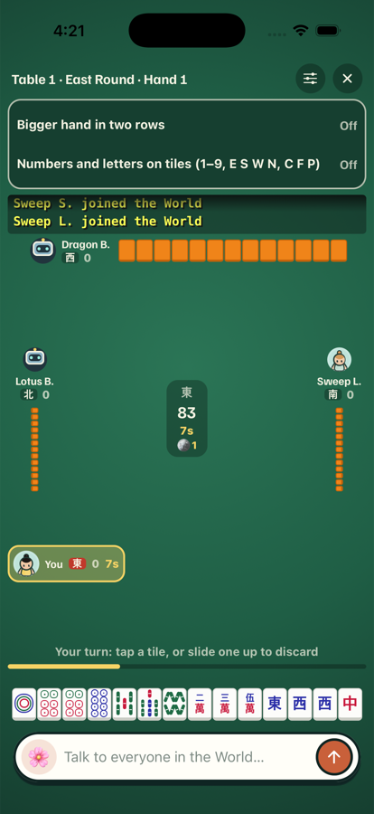
Numbers and letters off
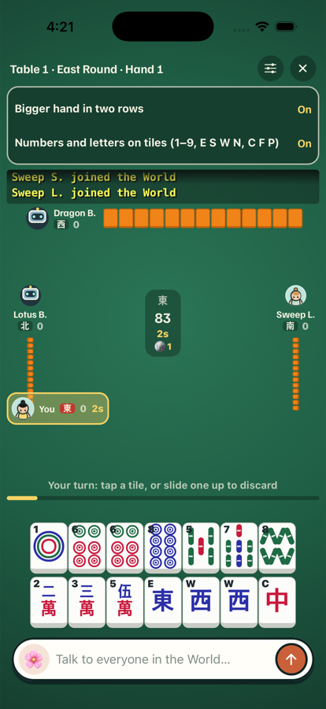
Bigger hand in two rows
Chat, giving up, the end of a hand
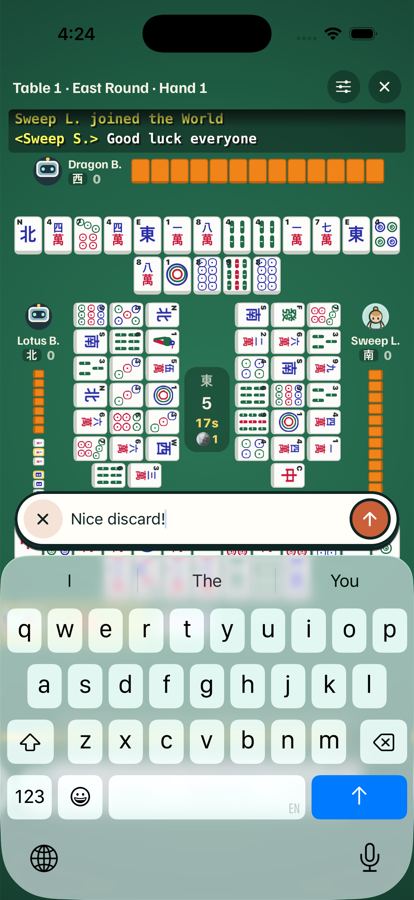
Typing with the software keyboard: the input floats over the table, which doesn't move
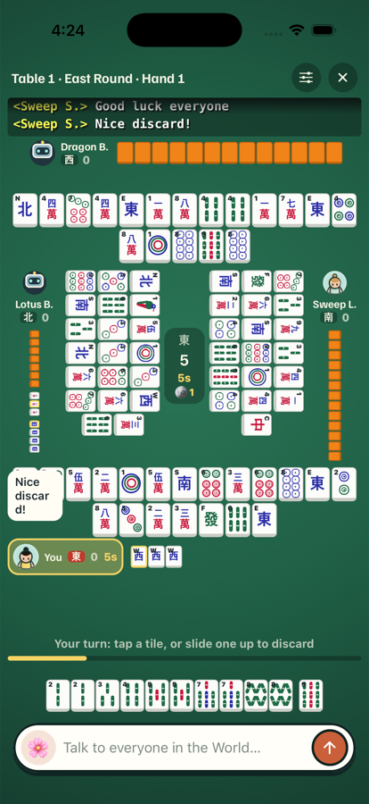
The room's chat in two lines at the top, and the bubble above the speaker (shot before its width fix)
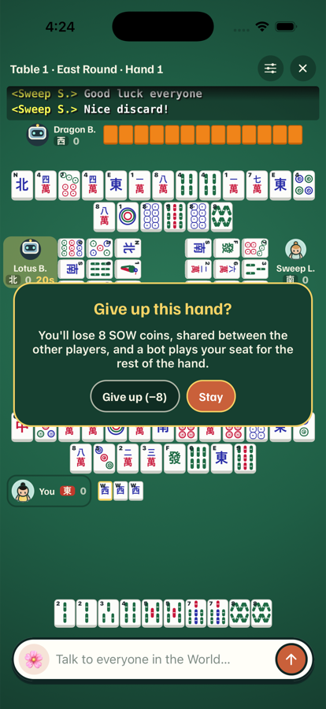
Leaving with coins on asks first: 8 coins at a 3 faan minimum and 1 coin a point
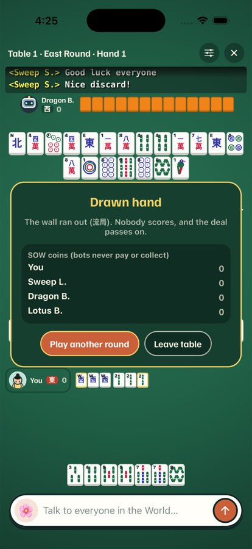
A drawn hand with coins on and two bots: nothing moves